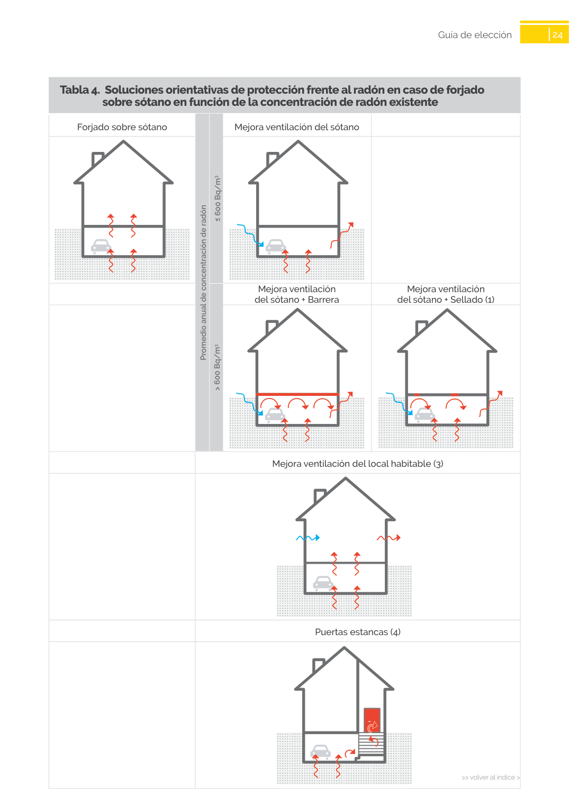

GUIA · sobre sótano en función de la concentración de radón existente · versión sin-fecha · capa guia
Formatos: JSON compacto · Markdown · PDF fuente
Ámbito del documento · texto del ámbito · documento y tablas
Tipo: formulas, tablas, figuras · nivel 3 · sección estimada: Guía de elección · padre: a0055
sobre sótano en función de la concentración de radón existente Forjado sobre sótano Mejora ventilación del sótano Mejora ventilación del sótano + Barrera Mejora ventilación del sótano + Sellado (1) Mejora ventilación del local habitable (3) Puertas estancas (4) Promedio anual de concentración de radón > 600 Bq/m3 ≤ 600 Bq/m3

PDF fuente redistribuible: copia fiel enlazada en esta página (SHA256 verificado).